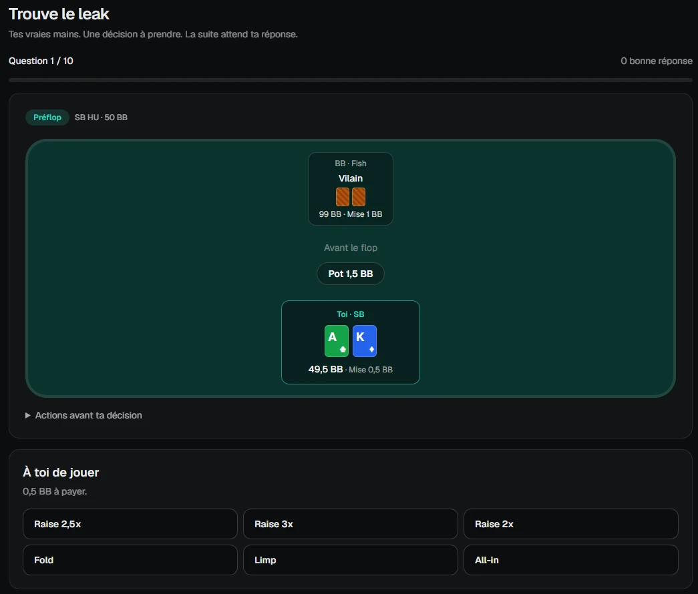
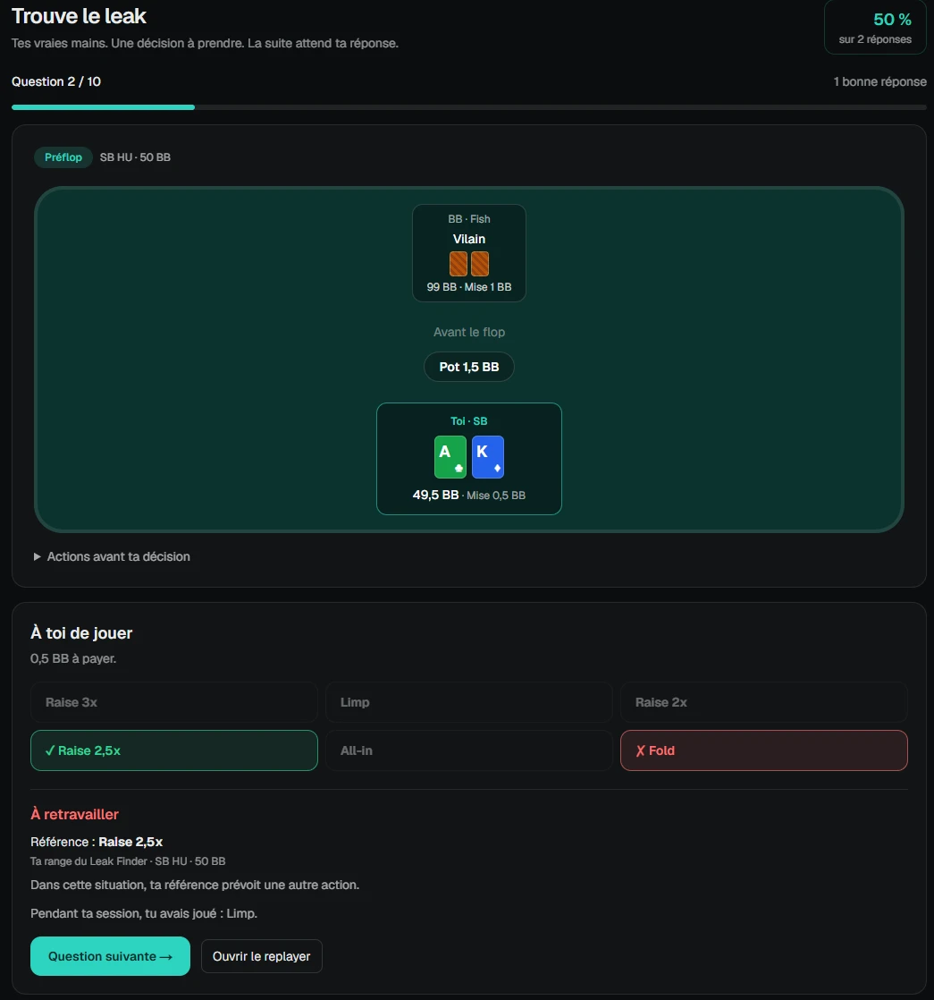

Compare à ton plan.
Retrouve tes mains dans ta carte mentale : conformes, en écart ou hors carte.

Tes mains de Spin deviennent un support d’entraînement. Compare tes décisions à tes ranges et à tes cartes mentales, puis retravaille-les avec Trouve le leak.
Sans carte bancaire · Puis une version gratuite limitée à 2 000 Spins
Windows 10 et 11, 64 bits · Réservé aux personnes majeures
Une présentation en une minute des cartes mentales, du Postflop et du jeu « Trouve le leak ».
Vidéo sans son, avec textes à l’écran. Captures de l’application sur données d’exemple.
Importe tes historiques de Spins. Dans le Leak Finder, tes mains sont comparées aux ranges et cartes mentales que tu as renseignées. Le Postflop distingue les mains conformes, les écarts, les situations hors carte et les références à compléter. Avec « Trouve le leak », choisis une action avant de voir la suite de la main. Consulte la correction liée à tes références et ouvre le replayer pour revoir la situation. L’essai de 14 jours de la formule Complète commence à la création du compte, sans carte bancaire.
Retrouve tes mains dans ta carte mentale : conformes, en écart ou hors carte.
Un exercice construit à partir de tes mains terminées, sans révéler la suite avant ta réponse.

Consulte la correction selon tes références, puis retrouve la main dans le replayer.

Les exemples sont illustratifs. Les comparaisons et les exercices nécessitent des mains couvertes par les ranges ou cartes mentales que tu renseignes.
Pensé pour le format Spin & Go à 3 joueurs, avec les grilles de multiplicateurs de chaque room.
Gain net, cEV ajusté aux all-in, ROI et multiplicateurs tirés : tu sais ce qui vient de ton jeu et ce qui vient de la chance.
Les stats de chaque joueur croisé, leur profil et tes résultats contre eux, pour savoir qui attaquer et qui éviter.
Rejoue tes mains action par action, garde tes favoris et tes notes, et prépare tes séances de review.
Tes décisions préflop comparées à tes ranges. Dans le Postflop, suis tes cartes mentales et retrouve les mains conformes, les écarts et les situations hors carte.
Les stats de tes adversaires posées sur la table pendant que tu joues, et un cadre qui suit ta session.
Un solveur qui tourne sur ton PC calcule la stratégie théorique d'une main jouée, du flop à la river, pour un jeton.
Fisherman Spin lit tes historiques sur ton ordinateur. Rien n'est envoyé sur un serveur.
Installe l’application, crée ton compte, puis importe une session et renseigne tes premières références. Le guide t’accompagne à chaque étape.
14 jours d'essai de la formule Complète à la création de ton compte, sans carte bancaire. Abonnements sans engagement, résiliables à tout moment depuis l'application.
0 €
pour toujours
14,99 €
par mois
24,99 €
par mois
Prix TTC. Abonnement et jetons se règlent dans l'application, page Compte.
Crée tes références dans Entraînement → Mes cartes ou Mes ranges. Importe des Spins terminés, puis ouvre Leak Finder → Postflop → Ma stratégie, ou Entraînement → Trouve le leak. Seules les situations couvertes par tes références peuvent être comparées. Ces fonctions sont accessibles pendant l’essai de la formule Complète et avec une formule payante, selon les limites de celle-ci.
Betclic, Unibet et Winamax (Expresso et Expresso Nitro), pour les Spin & Go à 3 joueurs. Il lit les historiques que ces rooms enregistrent sur ton ordinateur, et peut les relire en direct pendant que tu joues.
Non. Elles restent sur ton ordinateur. Pour l'analyse GTO, seul l'identifiant de la main analysée est noté sur ton compte, pour ne jamais te la faire payer deux fois.
Le HUD s'utilise sur Unibet, qui autorise les trackers et les HUD. Respecte toujours les règles de la room où tu joues. Les analyses GTO portent sur des mains terminées, jamais sur une partie en cours.
Dans l'application, page Compte, bouton « Gérer mon abonnement », puis « Annuler ». Tu gardes l'accès jusqu'à la fin de la période payée.
Windows 10 ou 11, 64 bits. L'analyse GTO est plus rapide sur un ordinateur récent. Un compte fonctionne sur un seul ordinateur ; tu peux passer sur un nouveau PC depuis l'application, une fois par mois.
Tu joues en Spin sur Betclic, Unibet ou Winamax ? Essaie l’application avec tes historiques et partage ce qui t’aide, ce qui manque ou ce qui te bloque.